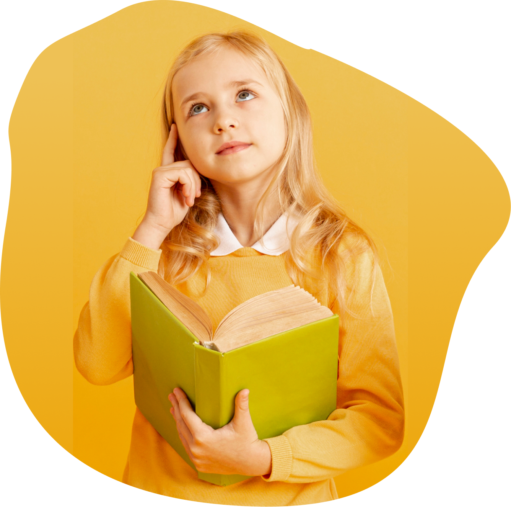

ЦЕЛЬ МОЕГО ПРОЕКТА
На данный момент моя школа, как и многие другие учебные заведения, нуждается в модернизации и улучшении системы школьного образования. Современным ученикам и так тяжело справляться с обучением, а не оснащенные должным оборудованием школы оказывают еще большее влияние на заинтересованность подростка в обучении. Во многих школах нет возможности проявляться и чувствовать себя комфортно, и школьная жизнь превращается в рутину.Школа является одним из ключевых факторов становления человека. Она не только развивает его потенциал и помогает личности развиваться, но и формирует восприятие мира и положение в нем. Внешний вид, внутренний дизайн, оснащение школы имеет большое значение для всех участников образовательного процесса я проанализировала основные недостатки многих школ и подготовила этот проект, чтобы презентовать свои задумки и предложения. |
 |
|---|